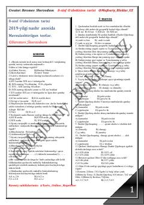

8O8-sinf O'zbekiston tarixi fanidan mavzulashtirilgan testlar to'plami.
Ushbu qo'llanma 8-sinf O'zbekiston tarixi fanidan o'quvchilar uchun tayyorlangan mavzulashtirilgan testlar to'plamidir. Unda O'rta Osiyo tarixi, xonliklar davri va Shayboniylar sulolasi kabi muhim tarixiy mavzular bo'yicha savollar jamlangan.